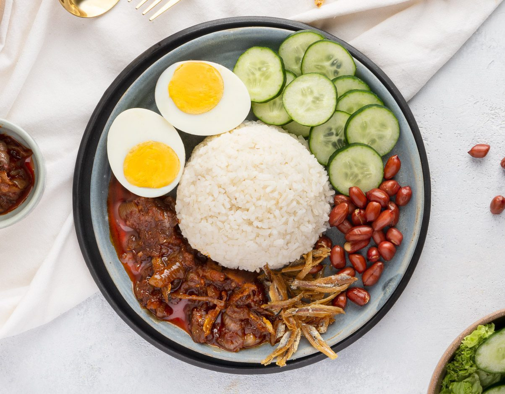

Nasi Lemak Recipe

A traditional Malaysian dish commonly eaten as breakfast among the locals
Nasi Lemak is dish originating in Malay cuisine that consists of fragrant rice cooked in coconut milk and pandan leaf.
Typically served with spiced fried chicken but may also come in several dish varieties such as sambal squid, cockles and prawn
Ingredients:
- 3 cups Basmathi rice
- 1/2 cup Coconut Milk
- 2 Pandan Leaves
- 1 teaspoon salt
- 3 cups Water
- 1 stalk lemongrass (bruised)
Steps:
If you have a rice cooker, simply put all the ingredients inside and let it do its job
Otherwise, follow these steps using a pot:
- Wash the rice until the water runs clear
- In a pot, bring the water, coconut milk, pandan leaves and lemongrass to a boil
- Bring it back to a gentle simmer, add the rice and then close the lid. Cook for 5 minutes and then give it a stir
- Cook for another 5 minutes and then turn off the heat
- Wait 10 minutes before opening the lid to fluff the rice.
Return to Home Page